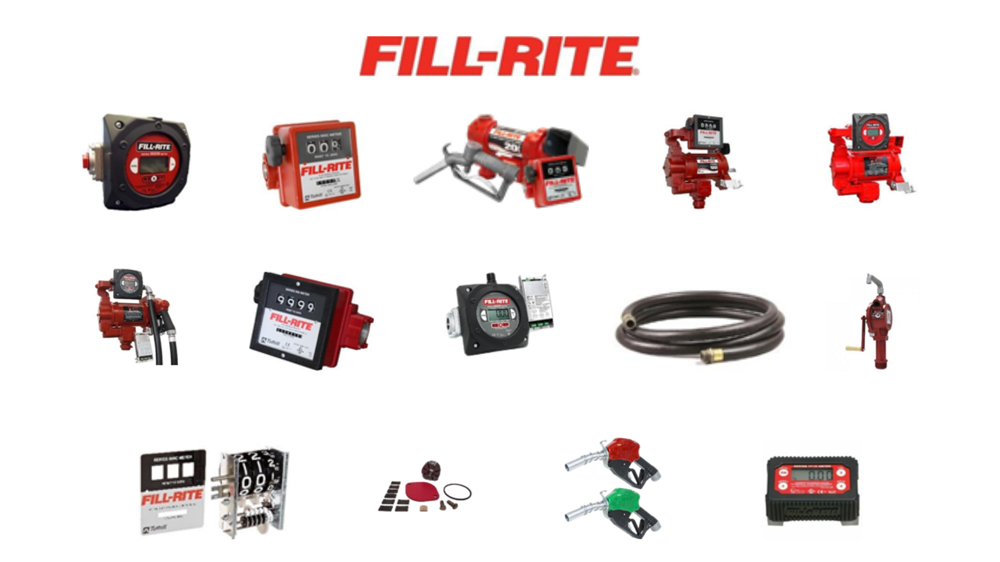
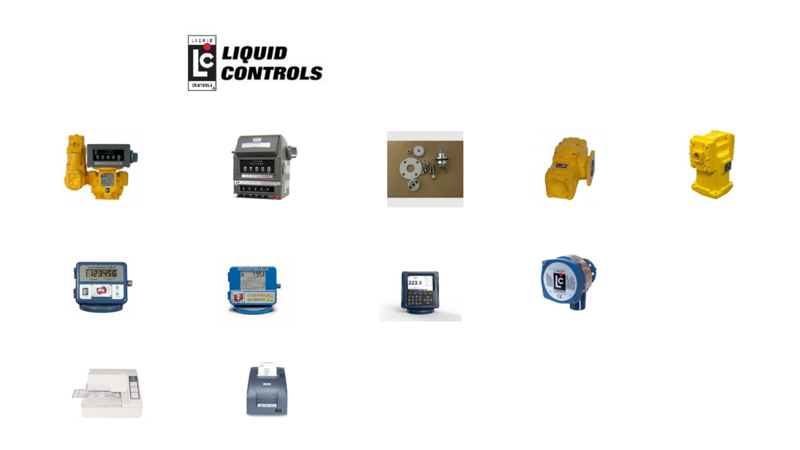
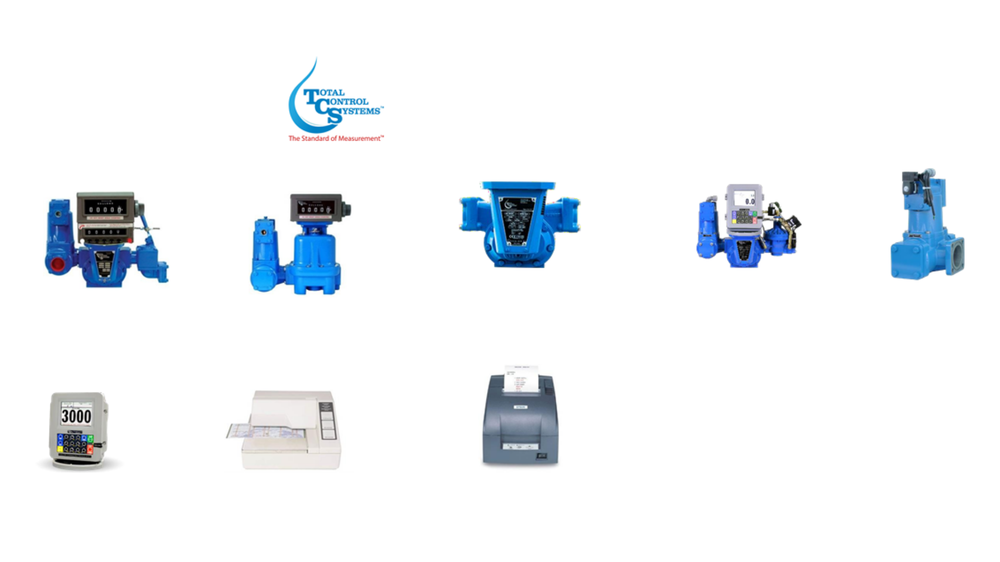
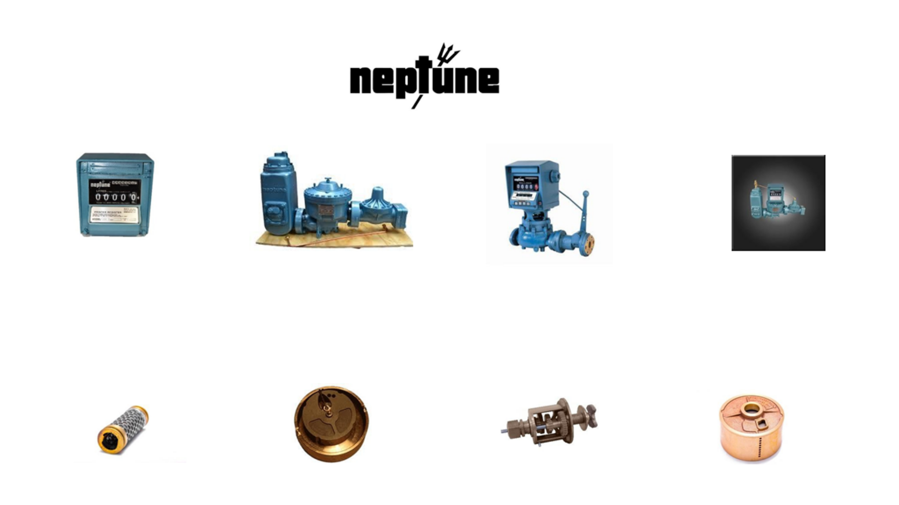
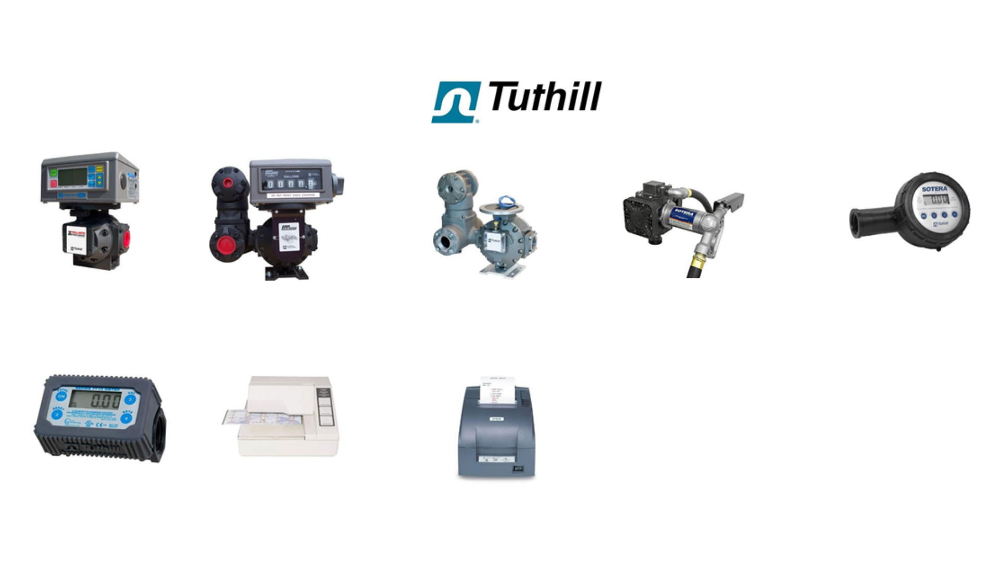
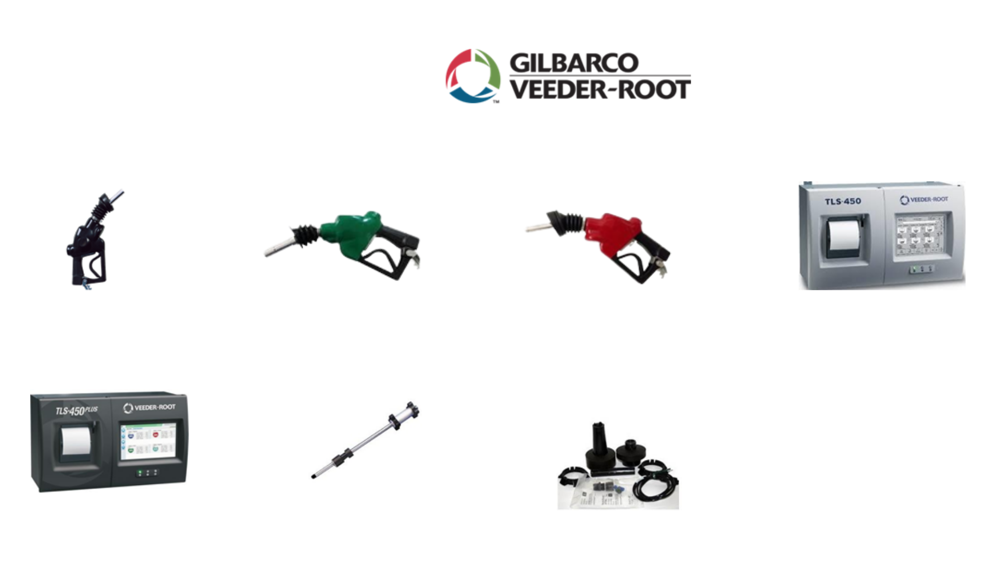
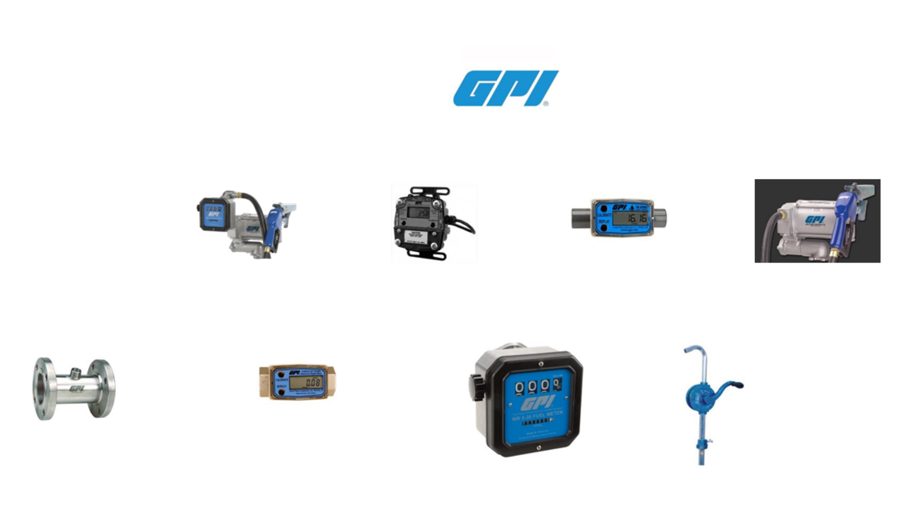
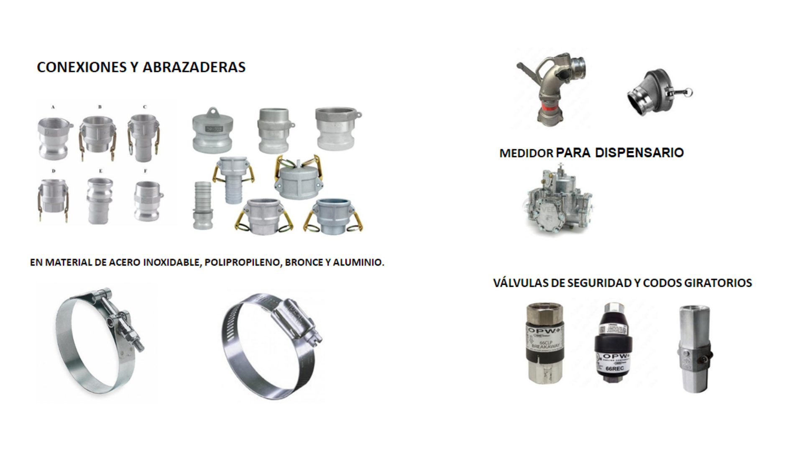
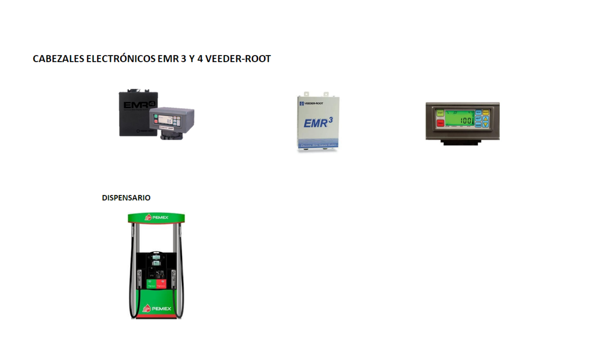

Somos empresa líder en el mercado dedicada a la solución del control de los energéticos, venta y reparación de medidores industriales; así como en mantenimientos preventivos y correctivos de los mismos. Trabajando con las marcas más reconocidas en el mercado mexicano, como: Liquid Controls, Fill Rite, Neptune, GPI, Tuthill, Total Control System, Gilbarco Veeder Root, mediciones industriales cuenta con técnicos capacitados para la reparación y calibración de sus equipos, llevando nuestros servicios a ferrocarriles, autoconsumos, aeropuertos, marinas y minas.
        